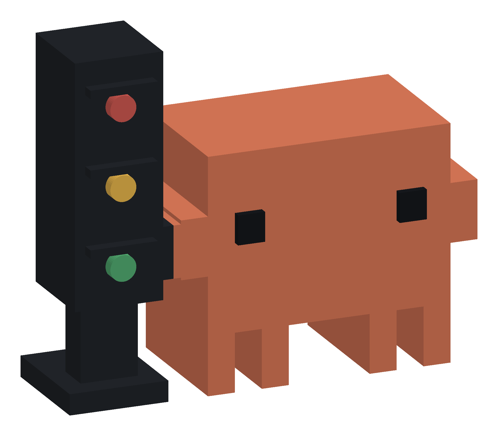

A bit of personality.
A small, terracotta companion with a familiar pixel-like silhouette. Made to live beside the things you love working with.
FOR THE HUMANS BEHIND THE PROMPTS
Meet Clawdy. Your tiny desk companion with one very useful job: letting you know when your AI is working, finished, or waiting for you.
Get to know Clawdy ↓A real little object. A calmer way to work.

01 / LESS CHECKING. MORE FLOW.
A glance is enough.Step away from the chat window. Clawdy keeps the important part visible, without bringing your prompts onto your desk.
Try the signals below. This is an illustration, not a live device connection.
Amber stays on while any tracked session is working.
A small, terracotta companion with a familiar pixel-like silhouette. Made to live beside the things you love working with.
Finish one session while another keeps working? Clawdy stays amber. Attention comes first, then errors, work and ready.
The Bluetooth link carries status, working-session totals and provider flags. Your prompts and conversations stay out of it.
02 / A LITTLE HELLO. THEN YOU'RE OFF.
Powered nearby. Connected by Bluetooth.Connect USB power to your pre-flashed Clawdy. The terminal assistant helps you find it, give it a name, and connect your supported local AI apps.
$ python3 install.py --onboard C L A W D Y A little companion for your AI work. 1/5 Prepare your laptop Check the local environment 2/5 Choose your setup Pick your local AI apps 3/5 Find your Clawdy Select and identify your toy 4/5 Make it yours › MyMac-Pip-7A92BC10 5/5 Install & check Review hooks. Verify the lights.
We're getting the hello just right. The public source supports guided setup with a local terminal-capable AI. Read the buyer setup request ↗. Signed packaging and clean-customer acceptance remain in progress. Naming requires compatible factory firmware.
A FEW THINGS TO KNOW
macOS with the nRF52840 prototype and local Codex has physical evidence. Windows and the new customer onboarding flow still need acceptance testing. Claude Code, Gemini CLI and Cursor adapters have software coverage; live acceptance remains pending. Linux/WSL and ordinary AI browser chats are unsupported.
Yes, the setup design assigns distinct names and checks each toy's hardware identity. You select and physically identify your toy. Only one laptop should control a unit at a time; release the old laptop before moving it.
A shipped, pre-flashed toy needs power, not a USB data connection to the laptop. Its exact power supply and board profile must be approved for that unit. Factory firmware installation and recovery are separate steps.
Blinking red means a supported request for input or permission needs you. Solid red means an explicit error was reported. Hook support and attention signals vary by local application.